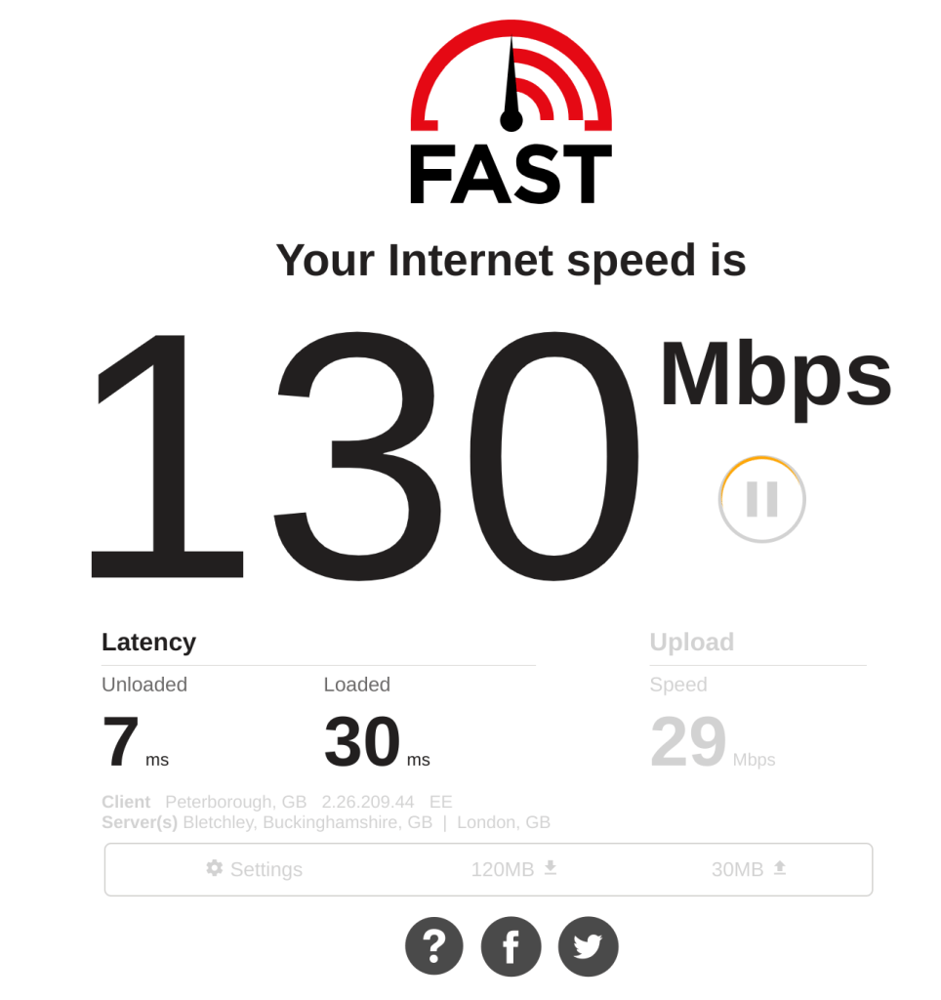
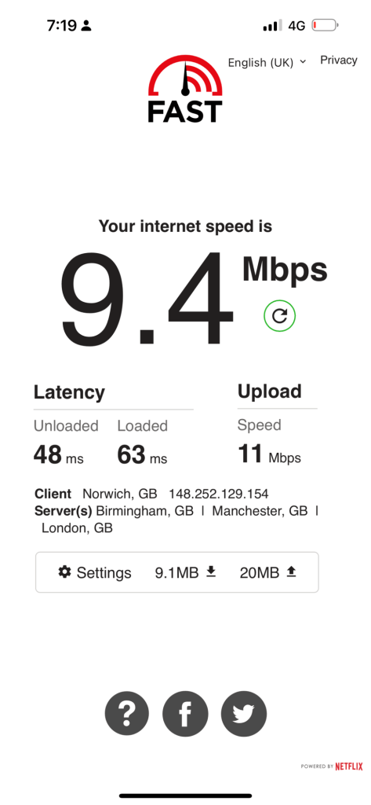
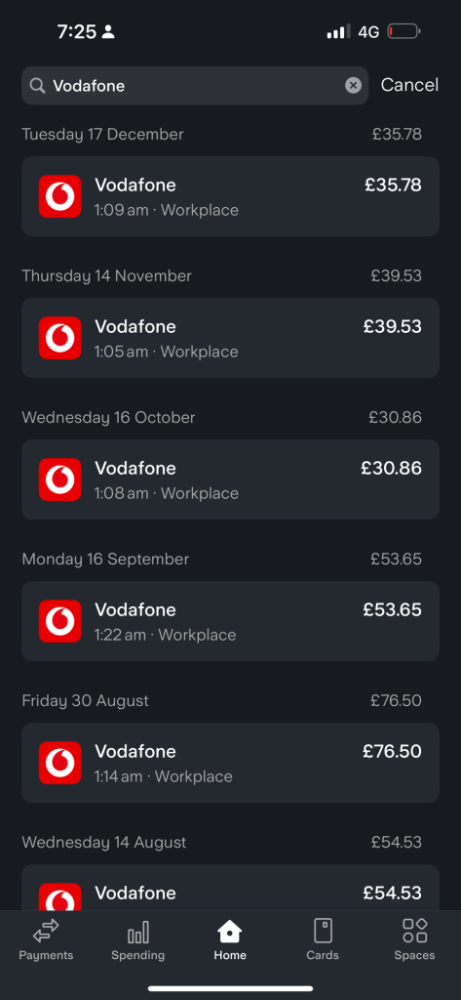
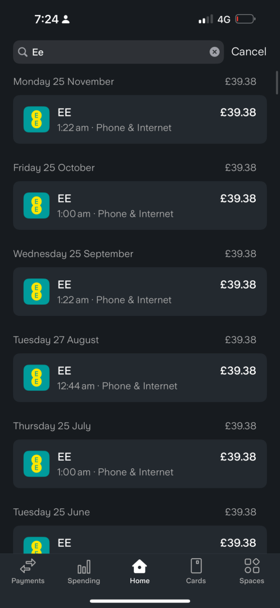
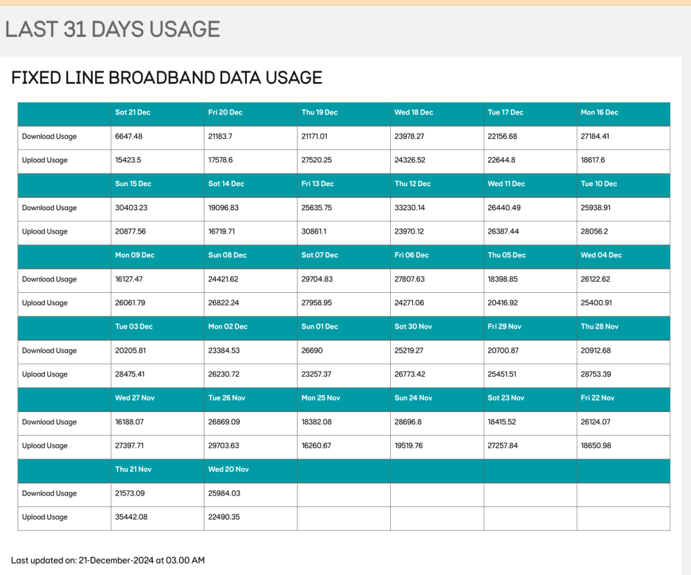
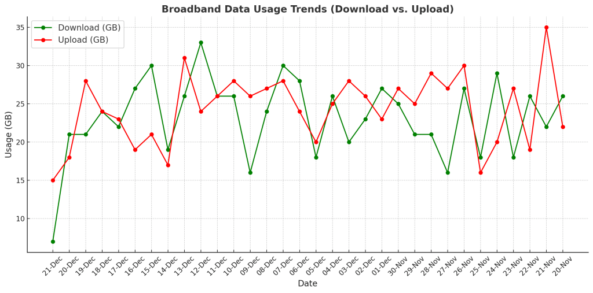

Home internet downgrade and reuse your internet ?
Sharing your phone’s internet connection through a router can be done in several ways. Here’s how you can do it:
Option 1: Use a Router with USB Tethering Support
-
Check Your Router: Ensure your router supports USB tethering. Check the manual or the router’s settings interface.
-
Enable USB Tethering on Your Phone:
• Connect your phone to the router using a USB cable.
• On your phone, go to Settings > Connections (or Network & Internet) > Mobile Hotspot and Tethering > USB Tethering, and toggle it on.
- Configure the Router:
• Access your router’s admin panel (usually via 192.168.1.1 or 192.168.0.1 in a web browser).
• Enable USB tethering if required.
- Share the Connection:
• The router should now share your phone’s internet to other devices via Wi-Fi or LAN.
Option 2: Use Your Phone’s Hotspot as WAN
If your router supports receiving internet from Wi-Fi (acting as a repeater or extender):
- Enable Your Phone’s Hotspot:
• Go to Settings > Mobile Hotspot and Tethering > Mobile Hotspot, and turn it on.
- Set Up Your Router:
• Log in to the router’s admin panel.
• Look for an option like Wireless WAN (WISP Mode) or Wi-Fi Repeater.
• Connect the router to your phone’s hotspot.
- Share the Internet:
• The router will now broadcast its own Wi-Fi using the phone’s hotspot as the internet source.
Option 3: Use a Travel Router
Some travel routers (e.g., GL.iNet or TP-Link Nano routers) can connect to your phone’s hotspot and redistribute it:
-
Enable Your Phone’s Hotspot.
-
Connect the Router to the Hotspot:
• Log in to the travel router’s admin interface.
• Set it up to connect to your phone’s hotspot.
- Broadcast Wi-Fi:
• The travel router will now act as a Wi-Fi access point for your devices.
Option 4: Use Ethernet Tethering (If Router Supports It)
- Enable USB Tethering:
• Connect your phone to a USB-to-Ethernet adapter.
• Plug the adapter into the WAN port of your router.
- Configure the Router:
• Log in to the router’s admin panel.
• Ensure the router is set to use the WAN port for internet access.
- Share the Connection:
• The router should now share your phone’s internet via Wi-Fi or LAN.
If your router doesn’t support these options, you can directly use your phone’s hotspot to share internet with multiple devices, though the range might be limited compared to using a router.
Problems
-
Battery health
-
In and out of the house
-
Desktops needs better internet
Apple Watch could change the game
Yes, your Apple Watch with an eSIM will work independently of your phone's internet connection, and you can receive calls and messages directly on your watch, provided the following conditions are met:
Requirements for Your Apple Watch to Work Independently:
- eSIM Activated on Your Watch:
Your Apple Watch must have an activated cellular plan (eSIM) through your carrier.
- Carrier Support:
Your carrier must support Apple Watch cellular connectivity and provide a plan linked to your iPhone’s phone number.
- Signal Strength:
Your Apple Watch must have a cellular signal to connect to the network independently of your iPhone.
Receiving Calls and Messages:
- Calls:
If the cellular plan is active, calls to your iPhone number will also ring on your Apple Watch, even if your phone is not connected to the internet.
- Messages:
For iMessages, your Apple Watch needs either cellular or Wi-Fi connectivity. If it's using cellular, it will receive iMessages as long as your iCloud account is signed in on the watch.
- For SMS/MMS messages, your iPhone typically forwards them to your watch. However, with a cellular connection on your watch, it can receive them directly from the carrier.
Summary:
Even if your phone's internet is being used by a router, your Apple Watch with an eSIM and active cellular plan will function independently. You'll still receive calls and messages on your watch as long as it has a good cellular connection.
40 pounds > home internet

When down graded to share the mobile with limited internet

Slower downloads
Higher latency
Multi usecase would not be so great
480 pound savings


Risks
-
-
Train usage stops
-
Ee usage > and vodafone usage different usage
-
No coffeeshop practical out
EE home usage

https://mybroadbandaccount.ee.co.uk/b2cselfcare/b2c/broadbandusage?execution=e3s2
Here’s the broadband data usage with no decimals, rounded to the nearest whole number, and icons for clarity:
📅 Day⬇️ Download 🟢⬆️ Upload 🔴Sat 21 Dec7 GB15 GBFri 20 Dec21 GB18 GBThu 19 Dec21 GB28 GBWed 18 Dec24 GB24 GBTue 17 Dec22 GB23 GBMon 16 Dec27 GB19 GBSun 15 Dec30 GB21 GBSat 14 Dec19 GB17 GBFri 13 Dec26 GB31 GBThu 12 Dec33 GB24 GBWed 11 Dec26 GB26 GBTue 10 Dec26 GB28 GBMon 09 Dec16 GB26 GBSun 08 Dec24 GB27 GBSat 07 Dec30 GB28 GBFri 06 Dec28 GB24 GBThu 05 Dec18 GB20 GBWed 04 Dec26 GB25 GBTue 03 Dec20 GB28 GBMon 02 Dec23 GB26 GBSun 01 Dec27 GB23 GBSat 30 Nov25 GB27 GBFri 29 Nov21 GB25 GBThu 28 Nov21 GB29 GBWed 27 Nov16 GB27 GBTue 26 Nov27 GB30 GBMon 25 Nov18 GB16 GBSun 24 Nov29 GB20 GBSat 23 Nov18 GB27 GBFri 22 Nov26 GB19 GBThu 21 Nov22 GB35 GBWed 20 Nov26 GB22 GB
This table is simplified and visually enhanced for easier understanding. Let me know if there’s anything more you’d like! 😊

To visually represent trends in the broadband data usage, I can create a line graph or bar chart that compares the download and upload usage over the dates. Let me generate a suitable chart for you!
Here's a visual representation of the broadband data usage trends. The green line represents download usage, while the red line represents upload usage over the given dates.
The trends show how usage fluctuates day by day, giving a clear comparison between download and upload activities. Let me know if you'd like further customization or analysis! 📊
The daily averages are as follows:
-
Download Usage: ~23 GB/day
-
Upload Usage: ~24 GB/day
Let me know if you'd like further analysis! 😊
To calculate real-time usage per second, let's assume:
-
Active hours per day: 24 hours - 8 hours (sleep) = 16 hours.
-
Convert hours to seconds: 16 hours×60 minutes/hour×60 seconds/minute16 \, \text{hours} \times 60 \, \text{minutes/hour} \times 60 \, \text{seconds/minute}.
Real-time usage per second is the total daily average divided by the active seconds. Let's calculate!
The real-time broadband usage per second, assuming 16 active hours per day, is approximately:
-
Download: ~0.41 MB/s
-
Upload: ~0.43 MB/s
Let me know if you'd like a breakdown or further adjustments! 😊
To convert to megabits per second (Mbps):
- 1 megabyte (MB) = 8 megabits (Mb).
Multiply the usage per second by 8 to get Mbps.
Let's calculate and determine if typical mobile internet can handle this usage!
To convert the broadband usage from megabytes per second (MB/s) to megabits per second (Mbps), we'll multiply the values by 8, since 1 MB = 8 Mb.
For Download: 0.41 MB/s×8=3.28 Mbps0.41 \, \text{MB/s} \times 8 = 3.28 \, \text{Mbps}
For Upload: 0.43 MB/s×8=3.44 Mbps0.43 \, \text{MB/s} \times 8 = 3.44 \, \text{Mbps}
So, the download and upload speeds are approximately:
-
Download: 3.28 Mbps
-
Upload: 3.44 Mbps
Typical mobile internet capabilities:
Many mobile networks (like 4G or even 5G) can handle speeds of 10 Mbps or more for both download and upload, so these values should be well within the capabilities of most mobile internet connections.
Let me know if you'd like to adjust any other parameters or dive deeper into this!
How to contact us:
-
if you're an EE mobile customer, call us from any phone
-
if you have one of our broadband hubs, call 150 from an EE phone or 0330 123 1105.
Imported from rifaterdemsahin.com · 2024